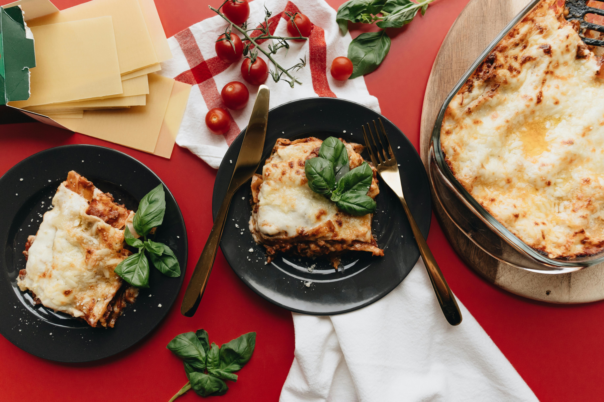

lasagna

Description
A delicious Lasagna! And it's vegetarian! Yum!
Ingredients
- 9 ounces no-boil lasagna noodles
- 3 Tablespoon shallot, finely chopped
- 4 cloves garlic, minced
- Pinch red pepper flakes
- 8 ounces baby spinach, roughly chopped
Instructions
- To make the tomato sauce, heat the oil in a frying pan over a medium heat and fry the onion for 8 minutes. Add the garlic and continue to cook for 2 minutes. Stir in the tomatoes, oregano and sugar and season with salt and pepper. Continue to cook for 5 minutes then remove from the heat.
- Meanwhile, to make the filling, mix the spinach, ricotta, mascarpone, pesto and nutmeg together in a bowl and season with plenty of salt and pepper. Set aside.
- Preheat the oven to 200C/180C Fan/Gas 6. To assemble the lasagne, lightly grease a 20x30x5cm/8x12x2in ovenproof dish. Spoon a third of the tomato sauce into the base then dollop over a quarter of the ricotta mixture. Swirl it through to create an even layer.
- Layer over 4 lasagne sheets, breaking them to fit snugly and cover the sauce. Repeat with another third of the tomato sauce, a further quarter of the ricotta mixture and a layer of lasagne sheets. Repeat again so the lasagna sheets are on top and there is still a quarter of ricotta mixture left.
- Gently mix the cream into the remaining ricotta mixture and spread this over the top layer of pasta. Sprinkle with the hard cheese and bake for 40-50 minutes. Serve immediately with salad, if preferred
go home